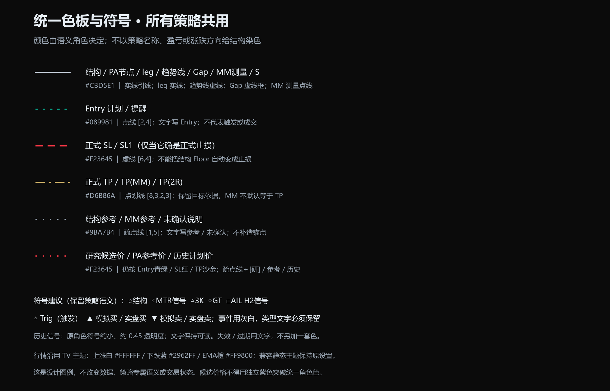
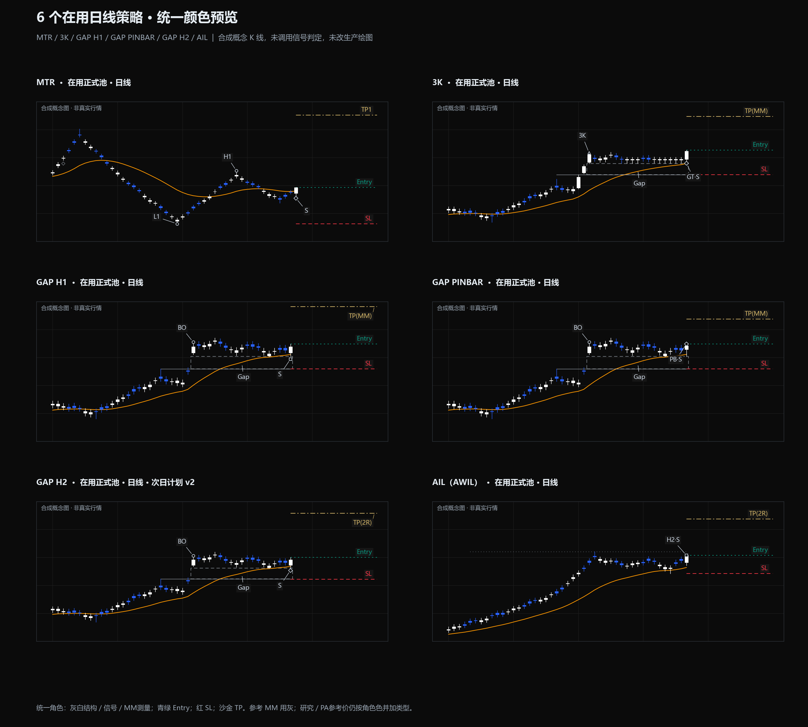
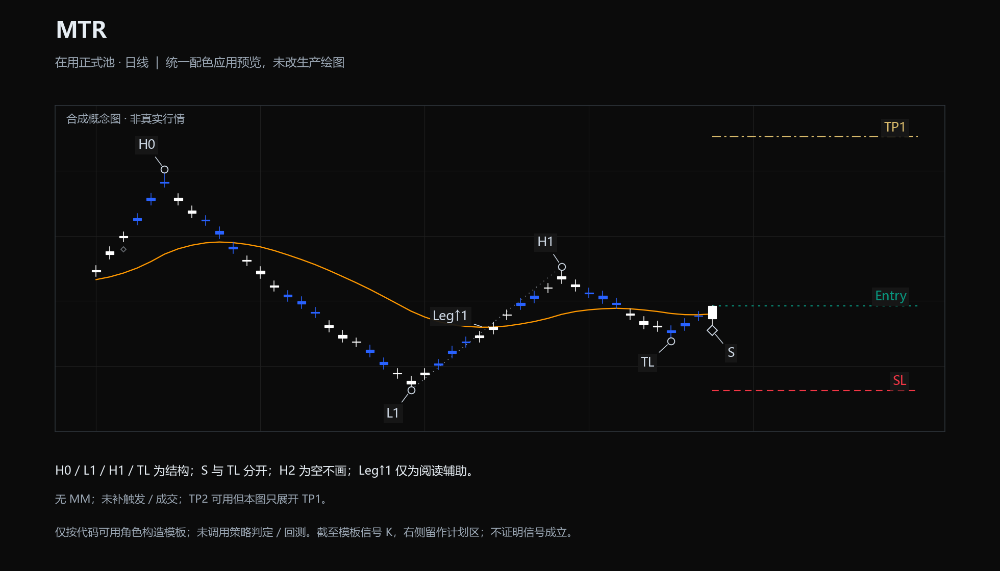
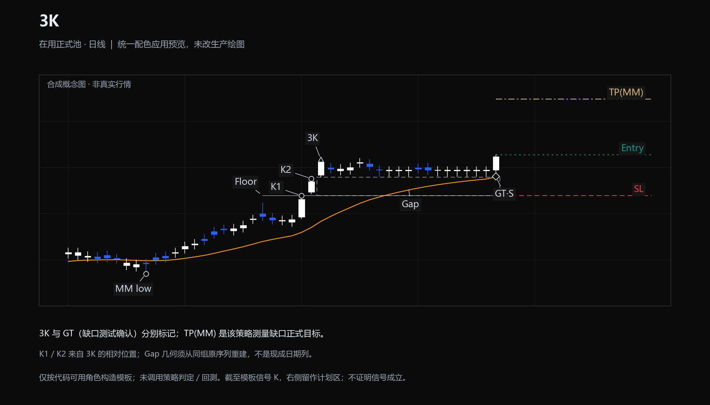
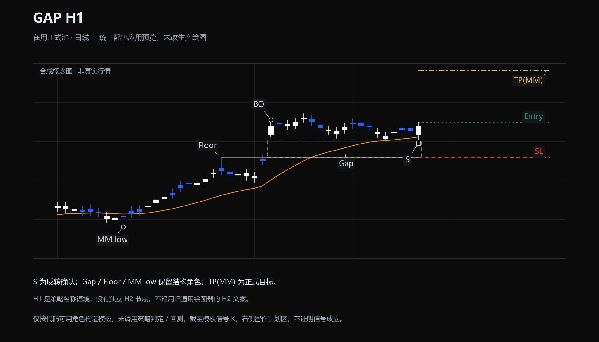
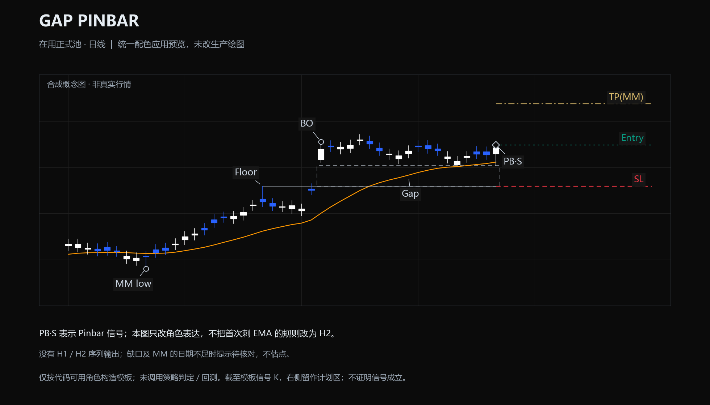
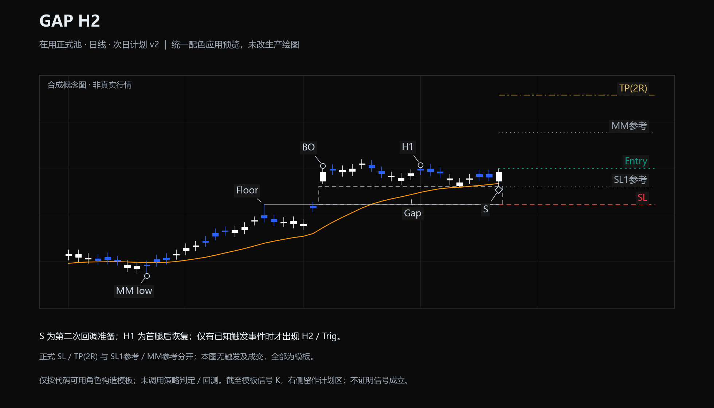
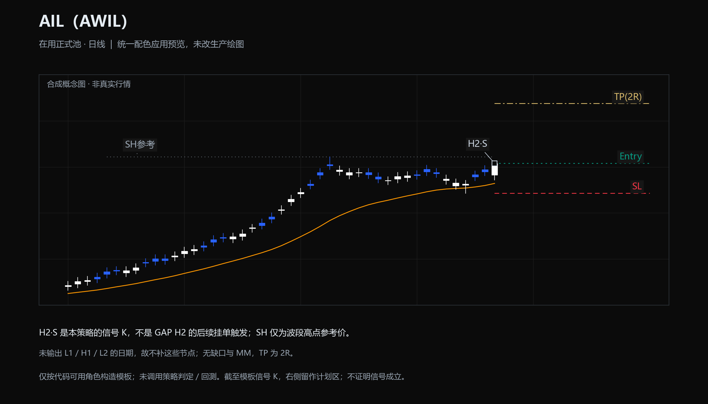

本轮仅 6 个在用日线策略：MTR、3K、GAP H1、Gap Pinbar、GAP H2、AIL（AWIL）。全部为合成概念 K 线；未调用信号判定，不是真实报价，也不表示生产界面已更新。点击任意图打开可缩放 SVG。



H0 / L1 / H1 / TL 为结构；S 与 TL 分开；H2 为空不画；Leg↑1 仅为阅读辅助。

3K 与 GT（缺口测试确认）分别标记；TP(MM) 是该策略测量缺口正式目标。

S 为反转确认；Gap / Floor / MM low 保留结构角色；TP(MM) 为正式目标。

PB·S 表示 Pinbar 信号；本图只改角色表达，不把首次刺 EMA 的规则改为 H2。

S 为第二次回调准备；H1 为首腿后恢复；仅有已知触发事件时才出现 H2 / Trig。

H2·S 是本策略的信号 K，不是 GAP H2 的后续挂单触发；SH 仅为波段高点参考价。